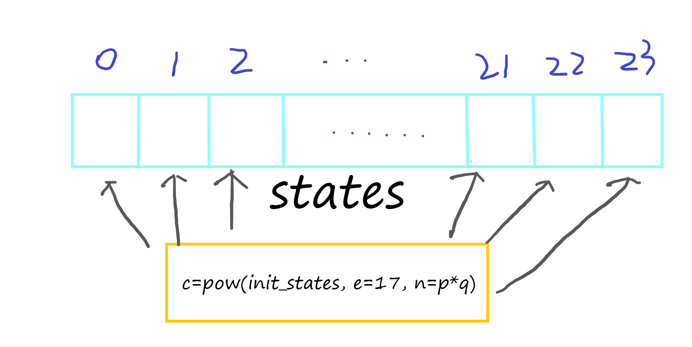
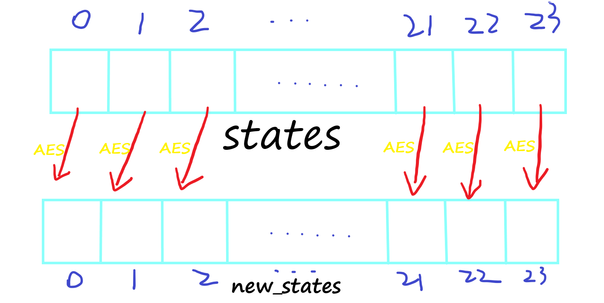
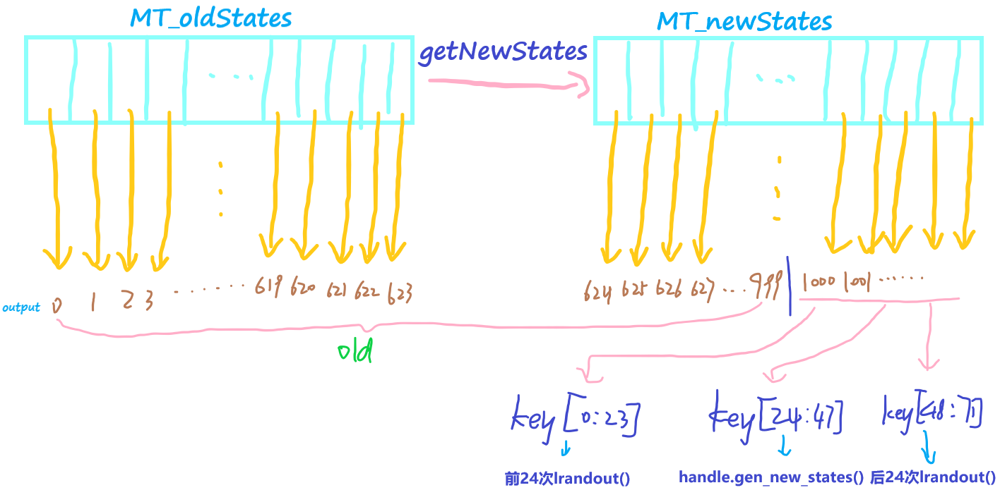

lrlr.py
x1from Crypto.Util.number import getPrime, bytes_to_long, long_to_bytes2from Crypto.Cipher import AES3import random456class lrand:78 def __init__(self, seed):9 self.seed = seed10 self.states = self.gen_states()11 self.statespoint = 012 self.stateselse = 241314 def generate_init_state(self):15 a = 016 for i in bin(self.seed)[2:]:17 a = a << 118 if (int(i)):19 a = a ^ self.seed20 if a >> 256:21 a = a ^ 0x10000000000000000000000000000000000000000000000000000000000000223L22 return a2324 def gen_states(self):25 init_state = self.generate_init_state()26 e = 1727 clist = []28 nlist = []29 for i in range(24):30 p = getPrime(512)31 q = getPrime(512)32 n = p * q33 c = pow(init_state, e, p * q)34 nlist.append(n)35 clist.append(c)36 f = open("cl", "wb")37 for i in nlist:38 f.write(hex(i) + "\n") #CRT39 return clist4041 def stateconvert(self, state):42 key = long_to_bytes(random.getrandbits(128))43 handle = AES.new(key, AES.MODE_CBC, "\x00"*16)44 output = handle.encrypt(long_to_bytes(state))45 return output4647 def gen_new_states(self):48 for i in range(24):49 key = long_to_bytes(random.getrandbits(128))50 handle = AES.new(key, AES.MODE_CBC, "\x00"*16)51 tmpstate=handle.encrypt(long_to_bytes(self.states[self.statespoint-24+i]))52 self.states.append(bytes_to_long(tmpstate))53 self.stateselse += 245455 def lrandout(self):56 if self.stateselse > 0:57 self.stateselse -= 158 tmp = self.states[self.statespoint]59 self.statespoint += 160 return self.stateconvert(tmp)61 else:62 self.gen_new_states()63 return self.lrandout()646566def oldtest():67 f=open("old","wb")68 s=""69 for i in range(1000):70 s+=str(random.getrandbits(32))+"\n" # MT71 f.write(s)727374def newtest():75 handle = lrand(bytes_to_long(open("flag", "rb").read().strip()))76 for i in range(24):77 handle.lrandout()78 f = open("new", "wb")79 s = ""80 for i in range(24):81 s+=handle.lrandout().encode("hex")+"\n"82 f.write(s)838485oldtest()86newtest()cl、old、new略
首先，handle = lrand(bytes_to_long(open("flag", "rb").read().strip()))，handle变量为lrand类的一个实例对象，flag被传入作为seed。
lrand初始化中的gen_states()：
init_states: 在GF(2^128)上对seed(flag)作一个特定的乘法运算的结果。
特定的乘法运算: 将seed乘上seed的二进制表示的逆序(e.g. seed=10111，那么10111 × 11101).
注意这边乘法是在GF(2^128)上进行的，其中不可约多项式为0x10000000000000000000000000000000000000000000000000000000000000223L
24次RSA生成24个states。

可以看到，states实际上是对同一个明文(init_states)，用同一个加密指数e=17，在不同的模数下加密生成的不同密文c。
如果我们能够知道24个密文c，就可以通过CRT得到init_states^17。其中init_states最多256位，那么init_states^17最多4352位，而我们有24个1024位的模数，CRT得到的结果是24×1024=24576位，所以我们使用CRT后得到的结果必然是准确（未被模过）的init_states^17。只要再对init_states^17开17次根就可以得到init_states。
handle会根据当前states输出一个数。states。每次输出的数，(stateconvert())会根据Python里的random.getrandbits(128)得到key，再将用AES.CBC对states加密得到的结果作为输出。
每次更新states，还是用random.getrandbits(128)得到的key用AES.CBC加密之前的states。

oldtest():
输出1000个由random.getrandbits(32)生成的随机数，并将结果保存在old文件中。
newtest():
先输出24个handle生成的数。此时，会更新states。
再输出24个handle生成的数，并将结果保存在new文件中。
Python的random库，用的是MT19937算法。每624次输出就会更新一次MT的内部states。MT19937算法实际上是可逆的，也就是说，我们可以根据old文件中的前624次输出，反推到内部states，进而预测未来的输出。可以预测出72次的AES加密用到的key。

思路：
old文件里有1000个随机数的输出，利用前624个，可以恢复MT19937的oldStates(这里上网找的一个逆MT19937脚本)。然后就可以推出1000个32-bit输出后的72个128-bit输出，即为72次AES加密的key，其中len(key)==72。key[-24:]对new文件中的24组AES密文解密。key[24:48]解密，得到RSA的24组输出。pow(init_state, e, n_i)的形式，所以可以用CRT得到init_state^17，然后开17次根能得到init_state。GF(2^256)上的乘法。上网搜了一下，发现用原来的函数继续不断加密下去就能得到原来的值。exp.py
xxxxxxxxxx1401from Crypto.Util.number import getPrime, bytes_to_long, long_to_bytes2from Crypto.Cipher import AES3import random4import gmpy25import mt6# https://github.com/x64x6a/MersenneTwister/blob/master/mt.py789def LinearCongruenceEquation(a, c, m):10 '''11 Solve x such that `a * x ≡ c (mod m)`.12 returns all the possible *x*s (mod m), None if no solution.13 '''14 g = gcd(a, m)15 if c % g:16 return None17 u0 = egcd(a, m)[0]18 return [(c * u0 + k * m) // g % m for k in range(g)]1920def CRT(ai, mi):21 '''22 Chinese Remainder Theorem.23 solve x such that `x ≡ ai[0] (mod mi[0]) ...`.24 '''25 assert(isinstance(mi, list) and isinstance(ai, list))26 a, m = ai[0], mi[0]27 for a1, m1 in zip(ai[1:], mi[1:]):28 # `x ≡ a (mod m)` ==> `x = a + k * m`29 # substitute in `x ≡ a1 (mod m1)` ==> `k * m ≡ a1 - a (mod m1)`30 k = LinearCongruenceEquation(m, a1 - a, m1) # solve k31 if not k:32 return None33 # The solution is x ≡ a + k * m (mod m * m1)34 a, m = a + k[0] * m, m * m135 return a3637def egcd(a, b):38 '''39 Extended Euclidean Algorithm.40 returns x, y, gcd(a,b) such that ax + by = gcd(a,b).41 '''42 u, u1 = 1, 043 v, v1 = 0, 144 while b:45 quotient = a // b46 u, u1 = u1, u - quotient * u147 v, v1 = v1, v - quotient * v148 a, b = b, a - quotient * b49 return u, v, a5051def gcd(a,b):52 '''53 Calculate the Greatest Common Divisor of a, b.54 '''55 # a, b = (b, a) if a < b else (a, b)56 while b:57 a, b = b, a % b58 return a5960# -------------------------------------------------------61# 1. find seed & calculate [1000:1000+3*24]62with open('old') as f:63 numbers = [int(line) for line in f.readlines()]64 # reverse initial 624 states65 states = mt.backtrack(numbers[:624])66 # construct tuple that can be accpected by random.setstate()67 init_state = (3, tuple(states + [624]), None)68 random.setstate(init_state)69 70 # yield next 1000 - 624 == 376 32-bit outputs71 for i in range(624, 624+376):72 assert(random.getrandbits(32) == numbers[i])73 # yield 24 * 3 == 72 128-bit outputs74 l = [random.getrandbits(128) for _ in range(72)]757677# ---------------------------------------------------------78# 2. AES.decrypt(c_i in new) --> states[-24:]79with open('new') as f:80 AES_cs = f.read().strip()81 cs = []82 for c in AES_cs.split('\n'):83 cs.append(bytes.fromhex(c))84 85 last_24_states = []86 for i, c in enumerate(cs):87 handle = AES.new(long_to_bytes(l[48+i]), AES.MODE_CBC, b"\x00"*16)88 last_24_states.append(bytes_to_long(handle.decrypt(c)))899091# ---------------------------------------------------------92# 3. AES.decrypt(last_24_states) --> first_24_states (RSA.cs[:24])93first_24_states = []94for i, state in enumerate(last_24_states):95 handle = AES.new(long_to_bytes(l[24+i]), AES.MODE_CBC, b"\x00"*16)96 first_24_states.append(bytes_to_long(handle.decrypt(long_to_bytes(state))))9798cs = first_24_states.copy()99100101# ----------------------------------------------------------102# 4. CRT --> flag**e (mod n1n2n3...n24)103with open('cl') as f:104 data = f.read().strip()105 ns = []106 for n in data.split('\n'):107 ns.append(int(n.strip('L'), 16))108109m_17 = CRT(cs, ns)110print(m_17)111# 2510033388914935424249610824408514940782270660333266743436342487430910989822826588240173001806267671424525215114894025825630560588336467027442165085360400840064006969628184341017285891224241398261213487679100212115748288198752110485692246440291534953808225507847503227328477318504530179344023567999359395554922484530375793949204403464225047464998775919150360451353304835355904357921599780715801219741163252079000606139064490742173094394788488802840981219721578753442546770326664375452016921087494868166280625428170329467338522766007315388224698272725416363353873661694658802334824847576035281726873379410265816346955156233135445701641843331105343708498254601119767993795204612908906931136582104130799981108113440875267933039658133162265705674625703145676031544475273808047440603315820734769537500468281128868944763919859935394234424164732646316065087169436965088550669667822431024240922303438243213243726158256708435209762666612899468134825806889519386885411719120486036888245169549392563068408116626021590670152646967882863161752521355577361003106815591186524642949084866554939337295925650989742601295404191411348008299490044403509231884062148222074164417039548171706634253335298453068170340623973569504728215315337972177877880689649244144514782149668470207313803565020196533594289512909614043301270257664112113114# -----------------------------------------------------115# 5. m_17**(1/17) == m116a, b = gmpy2.iroot(m_17, 17)117assert(b == 1)118print(a)119# 61406796444626535559771097418338494728649815464609781204026855332620301752444120121122# -----------------------------------------------------123# 6. Crack mul on GF(2^256)124def mul(x):125 a = 0126 for i in bin(x)[2:]:127 a = a << 1128 if (int(i)):129 a = a ^ x130 if a >> 256:131 a = a ^ 0x10000000000000000000000000000000000000000000000000000000000000223132 return a133134for i in range(100000):135 a = mul(a)136 if b'flag' in long_to_bytes(a):137 print(long_to_bytes(a), i)138 break139# b'flag{very_simple_random_problem}' 2693140nc 112.125.25.81 9999
服务器会返回一个字母，j, s, b。
发送字母英文过去，会有三种结果: you win, I win, peace。赢42次就能拿到flag。
感觉有点像手头剪刀布。。
发现如果第一次发过去字母和服务器先返回的字母一样，我就能赢。
继续尝试，发现如果字母顺序是jsb，那么如果第二次服务器返回的是s，发送j我就能赢;返回的是j，发送b就能赢；返回的是b，发送s就能赢。有一个-1的偏移量。
猜测第三次偏移量为-2，尝试，的确如此。
猜测接下来的偏移量就是0, -1, -2循环。果然每次都能赢。。。
直接手动发送，赢下42次，就能拿到flag:bytesctf{hello Bytectf}。